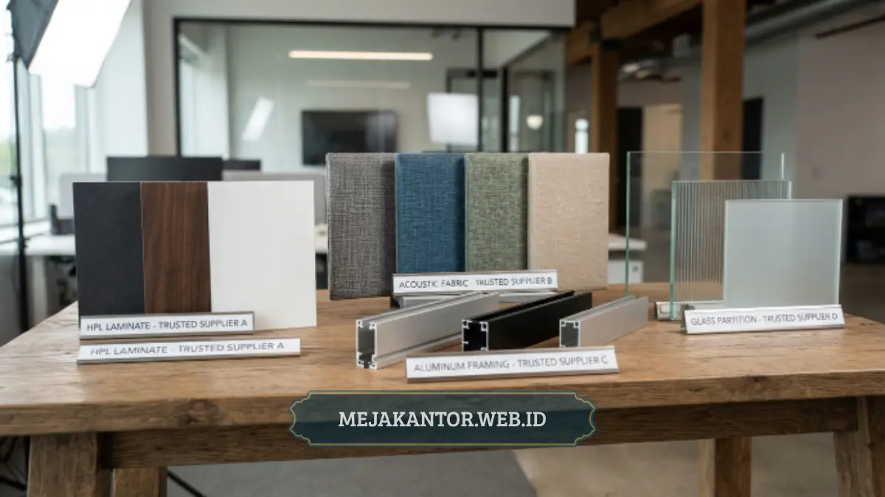

Supplier partisi workstation menyediakan sekat kerja modular yang membagi ruang kantor menjadi unit kerja individual, memadukan privasi, efisiensi ruang, dan estetika. Layanan ini mencakup konsultasi desain, pemilihan material, hingga instalasi di lokasi klien.
Ruang kerja korporat saat ini menuntut keseimbangan antara kolaborasi tim dan konsentrasi individu. Di sinilah peran supplier partisi workstation menjadi krusial: bukan hanya menjual sekat, melainkan merancang tata letak kerja yang mendukung produktivitas jangka panjang.
Bagi tim pengadaan atau manajer kantor yang sedang merencanakan renovasi atau pembangunan kantor baru, memahami cakupan layanan supplier partisi workstation akan membantu proses pengadaan berjalan lebih hemat waktu dan efisien.
- Partisi workstation memisahkan area kerja tanpa mengorbankan efisiensi ruang kantor.
- Supplier profesional menawarkan konsultasi desain, bukan sekadar penjualan produk.
- Material bervariasi dari partikel board, HPL, hingga kaca dan metal frame.
- Harga dipengaruhi ukuran, material, dan tingkat kustomisasi.
- mejakantor.web.id melayani pengadaan partisi workstation untuk korporat dan instansi di berbagai kota.
Daftar Isi Artikel
- Apa Itu Partisi Workstation dan Mengapa Kantor Membutuhkannya?
- Apa Saja Kriteria Supplier Partisi Workstation yang Andal?
- Apa Saja Jenis Material Partisi Workstation yang Umum Digunakan?
- Apa Saja Faktor yang Memengaruhi Harga Partisi Workstation?
- Bagaimana Proses Pemesanan Partisi Workstation yang Ideal?
- Kesalahan Umum Saat Memilih Supplier Partisi Workstation
- Solusi Pengadaan Partisi Workstation Berkualitas
Apa Itu Partisi Workstation dan Mengapa Kantor Membutuhkannya?
Partisi workstation adalah sekat modular yang dipasang pada atau di antara meja kerja untuk membatasi area kerja setiap karyawan, umumnya terbuat dari kombinasi panel padat dan bagian tembus pandang seperti kaca atau akrilik.
Kebutuhan ini muncul seiring pergeseran desain kantor dari ruang terbuka penuh menjadi model hybrid yang tetap kolaboratif namun memberi ruang privasi bagi setiap individu. Tanpa partisi, karyawan lebih mudah teralihkan oleh suara dan visual sekitar.
Partisi workstation menjawab kebutuhan ini dengan menyediakan batas visual dan akustik yang proporsional tanpa membuat ruang terasa sempit. Hal ini menjaga konsentrasi kerja mendalam tetap optimal sepanjang hari.
Selain fungsi privasi, partisi workstation juga berperan dalam pengelolaan kabel listrik, penempatan media penyimpanan pribadi, serta penataan alur sirkulasi karyawan di dalam ruangan kerja kantor modern.
Apa Saja Kriteria Supplier Partisi Workstation yang Andal?
Supplier partisi workstation yang andal menawarkan kombinasi kualitas material premium, layanan konsultasi desain tata ruang, ketepatan waktu pengerjaan, serta dukungan purnajual yang jelas dan terukur.
Portofolio dan Pengalaman Proyek
Supplier dengan rekam jejak pengerjaan proyek korporat maupun instansi pemerintah umumnya lebih memahami standar tata ruang, regulasi keselamatan kerja, dan kebutuhan ergonomis spesifik tiap jenis industri.
Ketersediaan Material dan Opsi Kustomisasi
Supplier yang baik menyediakan variasi material fleksibel sesuai anggaran dan estetika perusahaan, mulai dari particle board berlapis HPL hingga kombinasi rangka metal kokoh dan kaca tempered.
Proses Konsultasi dan Pengukuran Lokasi
Layanan survei dan pengukuran lokasi sebelum proses fabrikasi membantu memastikan dimensi partisi presisi sesuai denah ruangan, sehingga meminimalkan risiko ketidaksesuaian saat pemasangan langsung di lapangan.
Garansi dan Layanan Purnajual
Ketersediaan garansi produk serta kesiapan tim servis untuk perbaikan maupun penambahan unit komponen menjadi nilai tambah penting, terutama untuk pengadaan inventaris kantor dalam volume besar.
mejakantor.web.id menghadirkan seluruh aspek tersebut dalam satu layanan terintegrasi, mulai dari konsultasi layout awal hingga instalasi akhir di lokasi kantor Anda secara profesional.

Apa Saja Jenis Material Partisi Workstation yang Umum Digunakan?
Material partisi workstation yang umum digunakan meliputi particle board berlapis HPL, kaca tempered dengan rangka aluminium, serta panel akustik berbahan kain untuk kebutuhan peredam suara.
Particle board berlapis HPL: pilihan ekonomis dengan variasi warna dan tekstur yang sangat luas, menjadikannya opsi populer bagi kantor dengan alokasi anggaran menengah yang ingin tampilan rapi.
Kaca tempered dan aluminium frame: memberikan kesan modern, bersih, dan elegan, sekaligus tetap memungkinkan pencahayaan alami masuk menerangi seluruh area kerja tanpa halangan pekat.
Panel akustik berbahan kain: efektif menyerap pantulan gelombang suara dan menambah kenyamanan fokus kerja pada ruang kantor terbuka dengan intensitas komunikasi tim yang tinggi.
Banyak perkantoran kini menggabungkan panel padat di bagian bawah dengan kaca di bagian atas untuk meraih keseimbangan sempurna antara privasi kerja karyawan dan keterbukaan ruang kantor.
Apa Saja Faktor yang Memengaruhi Harga Partisi Workstation?
Harga partisi workstation dipengaruhi oleh kombinasi spesifikasi material, dimensi ketebalan panel, tingkat kustomisasi desain, serta kompleksitas instalasi teknis pada lokasi bangunan kantor klien.
Secara umum, semakin tinggi tingkat kustomisasi modul dan semakin premium material yang dipilih, semakin tinggi pula investasi biaya yang dibutuhkan untuk merealisasikan tata ruang kantor tersebut.
Faktor volume pemesanan turut berpengaruh signifikan pada harga akhir per unit, karena pengadaan dalam jumlah massal umumnya memperoleh efisiensi produksi dan penyesuaian harga khusus dari pihak supplier.
Bagaimana Proses Pemesanan Partisi Workstation yang Ideal?
Proses pemesanan partisi workstation yang ideal dimulai dari konsultasi kebutuhan, survei lokasi, pengajuan simulasi desain dan penawaran harga, produksi quality control, hingga instalasi akhir dan serah terima.
Konsultasi awal: mendiskusikan kebutuhan ruang kerja tim, jumlah workstation yang direncanakan, serta estimasi anggaran pengadaan yang dialokasikan oleh manajemen perusahaan.
Survei lokasi: tim teknis mengukur denah aktual ruangan secara langsung untuk memastikan titik jalur kabel, pintu darurat, dan jarak lalu lintas karyawan terhitung dengan akurat.
Penawaran desain dan produksi: supplier menyajikan gambar 2D/3D beserta rincian biaya transparan sebelum memulai tahap perakitan unit di pabrik dengan standar kontrol mutu ketat.
Instalasi dan serah terima: teknisi berpengalaman melakukan pemasangan di kantor klien dilanjutkan peninjauan bersama untuk memastikan semua unit terpasang kokoh dan rapi.
Kesalahan Umum Saat Memilih Supplier Partisi Workstation
Beberapa kesalahan yang sering terjadi antara lain tidak melakukan survei lokasi sebelum produksi, memilih material hanya berdasarkan harga termurah tanpa melihat durabilitas, serta melupakan aspek garansi purnajual.
Kesalahan umum lainnya adalah mengabaikan integrasi manajemen jalur kabel listrik dan kabel data LAN, sehingga meja kerja berakhir berantakan dan mengganggu estetika interior ruang kantor Anda.
Dengan memilih mitra supplier yang berpengalaman, seluruh potensi kendala tata ruang dan instalasi dapat diantisipasi sejak tahap perencanaan desain gambar kerja awal.
Solusi Pengadaan Partisi Workstation Berkualitas
Memilih supplier partisi workstation yang tepat berarti berinvestasi pada kualitas ruang kerja yang mampu menunjang konsentrasi, kenyamanan, dan produktivitas tim perusahaan dalam jangka panjang.
mejakantor.web.id siap menjadi mitra strategis pengadaan furnitur kantor Anda, menyediakan solusi partisi workstation modular custom berkualitas dengan proses survei dan instalasi terpercaya.
Konsultasikan kebutuhan partisi workstation kantor Anda sekarang juga bersama tim mejakantor.web.id dan dapatkan penawaran harga transparan serta simulasi desain terbaik untuk ruang kerja Anda.

Mega Anggun (Ega)
Penulis Konten & Spesialis Penataan Interior Kantor. Berpengalaman dalam memberikan tips ergonomi dan memilih furnitur terbaik untuk menunjang produktivitas kerja.